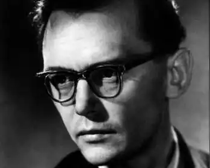
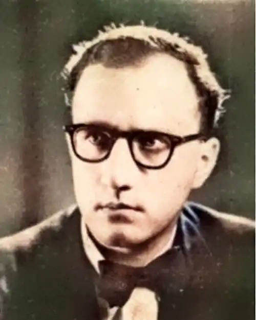

Леонід Полтава, (справжнє прізвище: Пархомович, прізвище-оберег: Єнсен) Дата народження 24 серпня 1921, Вовківці Роменського району на Сумщині — дата смерті 19 квітня 1990 Нью-Йорк, США.
Український поет, прозаїк, драматург, радіожурналіст, редактор, публіцист, громадський діяч, автор збірок віршів для дітей, член ОУП "Слово" та АДУКу — Асоціації Діячів Української Культури.
Народився в культурній і освіченій сім'ї: батько Едуард Адамович — лікар, мати Любов Іванівна — учителька. Початкову й середню освіту набув у Вовківецькій школі, опісля вступив до Ніжинського учительського інституту, якого закінчив у 1940. Активний в українському підпіллі, опинявся кількаразово в концтаборах; у повоєнні роки — у таборах для біженців у Німеччині. Поет живе кілька років у Парижі, потім у Мадриді очолює український відділ Іспанського радіо, згодом працює на радіо "Свобода" у Мюнхені. У 1958 року переїжджає до США, де працює в українській редакції радіо "Голос Америки", редагує щоденник "Свобода". Леонід Полтава — український новеліст, представник української діаспори в повоєнній Німеччині. У 1946 році виходить його перша збірка "За мурами Берліну", до якої ввійшли поезії часів війни, а в 1948 році — збірка "Жовті каруселі". У 1952 році у Мюнхені було видано невеличку збірку його новел під назвою "У вишневій країні". За згодом океаном виходять ще чотири поетичні збірки: "Біла трава", "Вальторна", "Із еспанського зшитка", "Смак Сонця". У 1953 виходить збірка "Українські балади", а у 1958 — "Римські сонети". Письменник часто казав: "Люблю працювати для дітей!" і частина його творчого доробку — для дітей: "Лебеді", "Котячий хор", "Абетка веселенька для дорослих і маленьких", вірші, казки, поеми, оповідання, лібретто оперет "Лис Микита", "Лісова царівна", "Мавп'ячий король", "Лисячий базар". Монументальна його праця — історичний роман "1709". У 1968 написав репортажну повість "Над блакитним Чорним морем" з 1917-22 років: події відбуваються в Україні, Туреччині, Болгарії та ЧСР. Усього рік не дожив поет до проголошення незалежності України, але письменник майже за півстоліття передбачив події в незалежній Україні у "Чи зійде завтра сонце?". Похований на українському православному кладовищі Св. Андрія в Саут-Баунд-Бруку, штат Нью-Джерсі. Автор поетичних збірок: "За мурами Берліну" (1946), "Жовті каруселі" (1948), "Римські сонети" (1958), "Біла трава" (1964), "Валторна" (1972), "Смак сонця" (1981). Збірки новел "У вишневій країні" (1952), історичного роману "1709" (1961), повісті "Чи зійде завтра сонце" (1955); п'єс "Чого шумлять верби" (1950), "Чужі вітри" (1954), "Заметіль" (1967), поем "Нескінчений бій" (1959), "Райдуга" (1963), творів для дітей "Подорожі і пригоди Миклухи-Маклая", "Котячий хор" (1976), "Абетка веселенька для дорослих і маленьких" (1969) та інших.